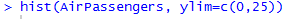
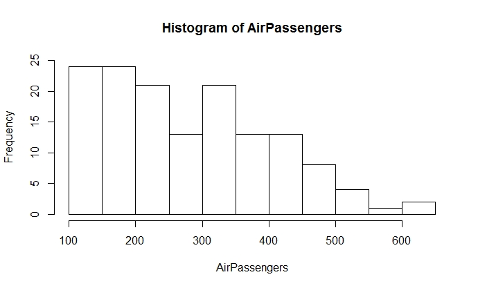
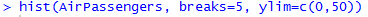
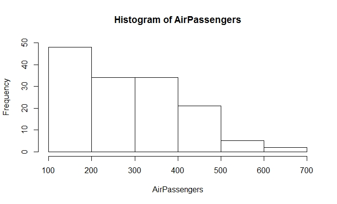
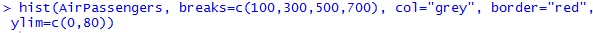
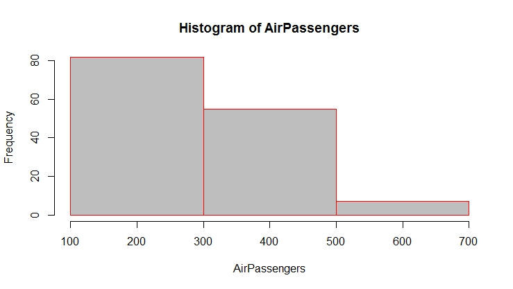

Learning Objective Five: Construct Histograms
Introduction
A histogram is a display of statistical information that uses bars to show the frequency of data in successive numerical intervals of equal size. It is plotted by dividing the range of observations into equal sized bins, and then counting the number of values appearing in each bin. The bars represent the bins, and the height of each bin represents the number of observations in each bin.
Knowledge
The R function of making a histogram is hist(x, breaks= , col= ,border= ,main= , xlab= , ylab= , xlim= , ylim= )
x: a vector of values for which the histogram is desired
breaks: one of the following
a vector giving the breakpoints between histogram bins
a function to compute the vector of breakpoints
a number giving the number of bins for the histogram
a function to compute the number of bins
col: a color to be used to fill the bars; the default yields unfilled bars
border: a color of the border of bards. The default is black
main: title of the graph
xlab: label of the x-axis
ylab: label of the y-axis
xlim: range of x values on the x-axis
ylim: range of the y values on the y-axis
Key Points to Remember
A histogram shows frequency of data in successive numerical intervals of equal size. A bell-shape and symmetric histogram represents a normal distribution. The R function to generate a histogram is hist().
Practice and Reflection
Practice
Example 7: Use the R data AirPassengers to generate a histogram to show the distribution of the number of passengers

The histogram is shown in figure 10

Figure 10. A histogram of air passengers
Figure 10 shows that there are about 24 flights with 100 to 150 passengers, 24 with 150 to 200 passengers, about 21 flights with 200 to 250 passengers, etc.
If we would like to make only 5 bars (bins) for the histogram, then the R code is

The histogram is shown in figure 11

Figure 11. Histogram of airline passengers with fixed number of bins (n=5)
If we would like to add color to the histogram and make the bars grey and the borders red, and break the bins at 100, 300, 500, and 700, then the R code is

The histogram is shown in figure 12

Figure 12. Histogram of airline passengers with the bins of between 100 to 300, 300 to 500, and 500 to 700. The bar color is grey, and border color is red.
Reflection
Activity 7: a) Use the R data iris to generate a histogram for sepal length of that dataset; b) Use “breaks=c(seq(4,8,0.4) to try the new break points for the bins and state the size of the bins and the number of the bins observed; c) make the color of the bars red and border purple.
Assessment
If there are 12 students in a statistics class and the 12 students’ grades are
72 83 95 75 78 86 88 93 75 89 85 97
Generate a histogram to show the frequency of grades with the bins break at 70, 80, 90 and 100; Make the bars grey and the borders black. Label the x-axis as “grades” and y-axis as “Frequency”. Title the graph as “Student Grades”.